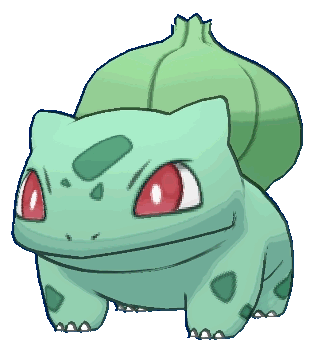

-
Pikachu
HP 35

Descrição
Os Pikachus são pequenos roedores de quarenta centímetros e de seis quilogramas, com um corpo redondo, pernas curtas e uma longa cauda, quando macho, a cauda tem um formato de um raio, mas se o Pikachu for fêmea sua cauda ganha um coração na ponta.
-
bulbassauro
HP 45
Descrição
Bulbassauro é um pequeno Pokémon quadrúpede que tem uma pele azul-esverdeada com manchas mais escuras. Tem olhos vermelhos com pupilas brancas, pontiagudas, estruturas em forma de orelhas no alto da cabeça e um focinho curto e rombudo com a boca larga. Um par de dentes pequenos e pontiagudos são visíveis no maxilar superior quando a boca está aberta. Cada uma das suas pernas grossas termina com três garras afiadas. Nas suas costas há um bulbo de planta verde, que é cultivado a partir de uma semente plantada no nascimento. O bulbo fornece energia através da fotossíntese, bem como das sementes ricas em nutrientes contidas no interior.
-
Charmander
HP 39

Descrição
Charmander é um Pokémon do tipo fogo, parecido com um dinossauro. A maior parte de seu corpo é de cor laranja, enquanto seu ventre é de uma cor amarelo-clara pálida. A chama que arde na ponta da cauda é uma indicação das suas emoções.
-
Squirtle
HP 44
Descrição
Squirtle é um Pokémon do tipo água. Tem uma pele azul claro e usa um casco, é uma calda azul. O casco de Squirtle não é apenas usado para a proteção. A forma arredondada do casco e as ranhuras em sua superfície ajudam a minimizar a resistência na água, permitindo que este Pokémon nade em altas velocidades.
-
Mewtwo
HP 106

Descrição
Mewtwo foi criado geneticamente em um laboratório, sendo um clone do misterioso antigo Pokémon Mew. É uma criatura com uma postura humanóide, mas tem algumas características felinas. Mesmo que o poder científico dos humanos tenha criado este Pokémon, eles não conseguiram dotar Mewtwo com um coração compassivo.
-
Mew
HP 100

Descrição
Mew é um Pokémon muito curioso e inteligente que só vai aparecer para alguém com um coração puro. Ele adora brincar e nadar, e é conhecido por agir de forma muito infantil, às vezes, querendo que todo mundo confie para brincar com ele. Ele é atraído por canções de ninar e vai tentar ficar o mais próximo ao som da música possível. Ao todo, Mew é conhecido como uma espécie feliz, lúdico e otimista de Pokémon.